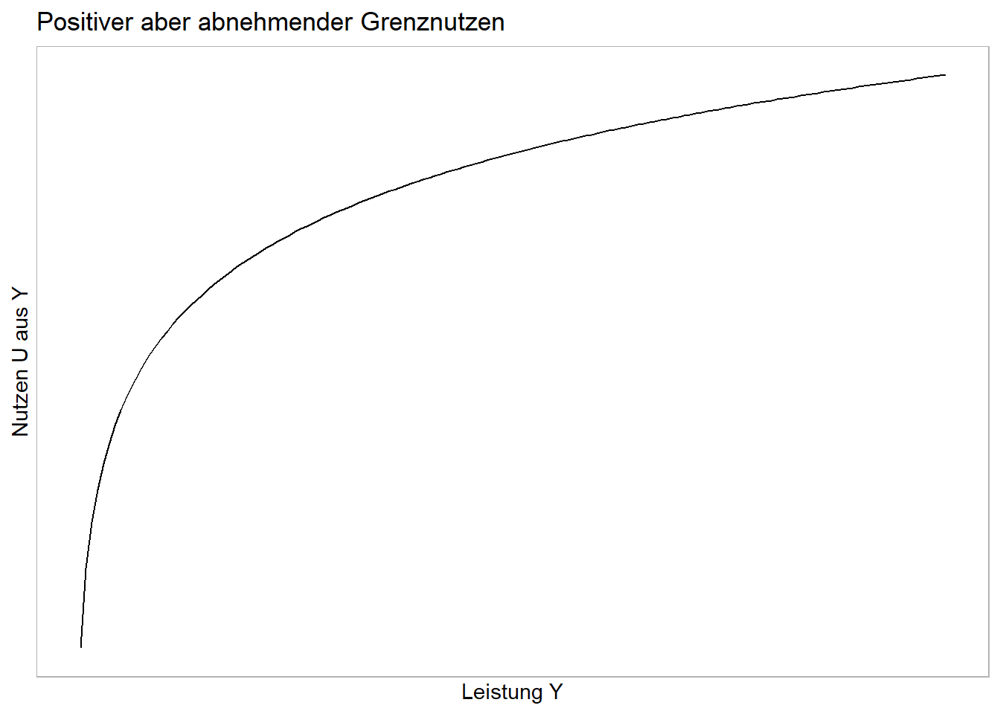
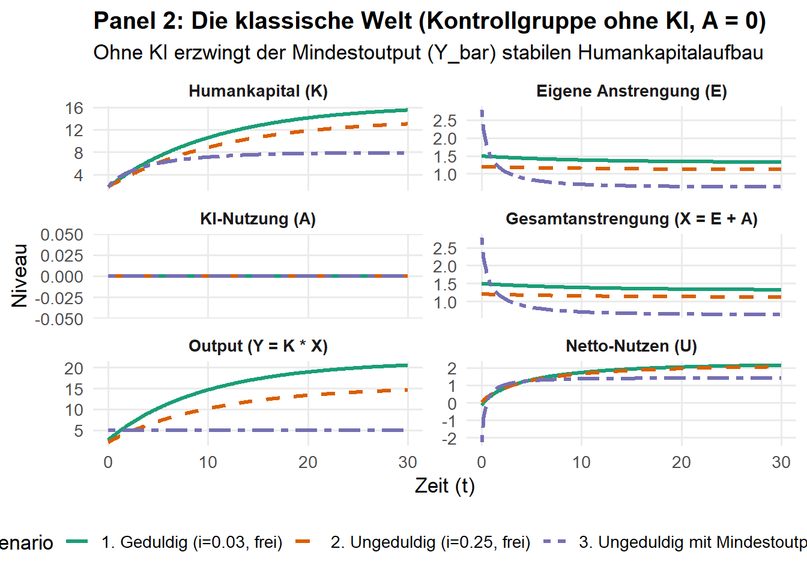
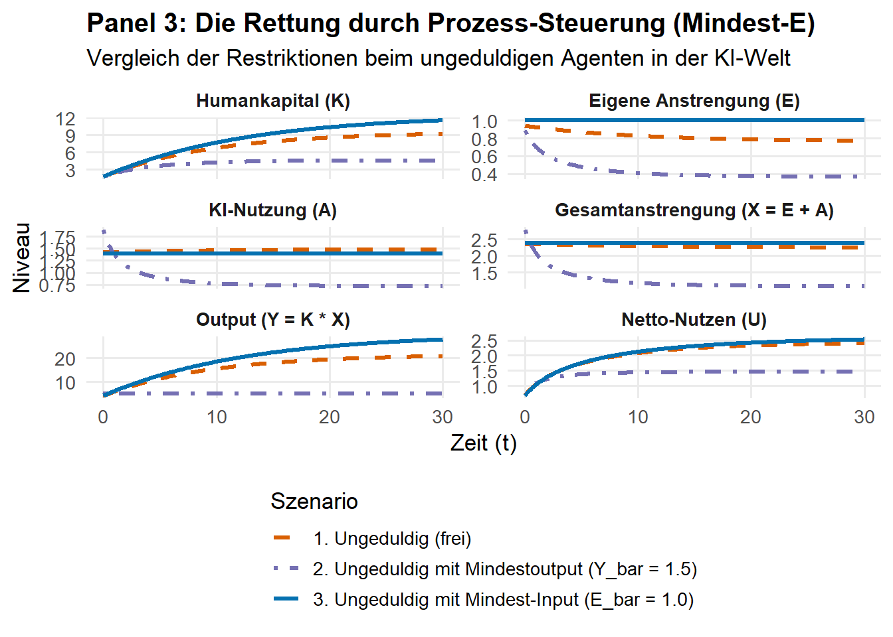

Code
library(deSolve)
library(ggplot2)
library(dplyr)
library(tidyr)
# ==============================================================================
# 1. PARAMETER
# ==============================================================================
delta <- 0.08 # Abschreibungsrate des Wissens
theta_E <- 1.00 # Arbeitsleid für eigenes Denken/Lernen
theta_A <- 0.30 # Geringes Disutility für KI-Nutzung
K_0 <- 1.80 # Identischer Start-Kapitalstock
Y_bar <- 5 # Exogenes Mindestoutput-Niveau (für Restriktions-Fälle)
i_geduldig <- 0.03 # Rationale Vorausschau / Geduld
i_ungeduldig <- 0.25 # Zu hohe Diskontrate / Ungeduld
# Labels für einheitliche Zuordnung in Plots
lbl_geduldig <- "1. Geduldig (i=0.03, frei)"
lbl_ungeduldig <- "2. Ungeduldig (i=0.25, frei)"
lbl_restringiert <- "3. Ungeduldig mit Mindestoutput (Y_bar=1.5)"
# ==============================================================================
# 2. SIMULATIONS-ENGINES
# ==============================================================================
# ------------------------------------------------------------------------------
# ENGINE A: MIT KI (Freie Optimierung über Sattelpfad)
# ------------------------------------------------------------------------------
get_EA_free <- function(mu, t_E, t_A) {
a <- t_E * (t_E + t_A)
b <- -mu * (2 * t_E + t_A)
c <- mu^2 - t_A
disc <- b^2 - 4 * a * c
E <- (-b + sqrt(disc)) / (2 * a)
A <- (t_E * E - mu) / t_A
list(E = E, A = A)
}
sim_KI_free <- function(i_val, label, T_max = 30) {
ss_eq <- function(mu) get_EA_free(mu, theta_E, theta_A)$E - (delta / ((i_val + delta) * mu))
mu_star <- uniroot(ss_eq, interval = c(0.001, 10))$root
K_star <- 1 / ((i_val + delta) * mu_star)
dE_dmu <- (get_EA_free(mu_star + 1e-6, theta_E, theta_A)$E - get_EA_free(mu_star, theta_E, theta_A)$E) / 1e-6
J <- matrix(c(-delta, 1/(K_star^2), dE_dmu, i_val + delta), nrow = 2)
ev <- eigen(J)
beta <- (ev$values[which(ev$values < 0)] - (-delta)) / dE_dmu
ode_model <- function(t, state, parms) {
K <- state["K"]
mu <- mu_star + beta * (K - K_star)
dK <- get_EA_free(mu, theta_E, theta_A)$E - delta * K
list(c(dK))
}
out <- ode(y = c(K = K_0), times = seq(0, T_max, by = 0.1), func = ode_model, parms = NULL)
df <- as.data.frame(out) %>% mutate(mu = mu_star + beta * (K - K_star), Typ = label, KI = "Mit KI")
ea <- lapply(df$mu, get_EA_free, t_E = theta_E, t_A = theta_A)
df$E <- sapply(ea, `[[`, "E"); df$A <- sapply(ea, `[[`, "A")
df$X <- df$E + df$A; df$Y <- df$K * df$X
df$U <- log(df$Y) - 0.5 * theta_E * (df$E^2) - 0.5 * theta_A * (df$A^2)
return(df)
}
# ------------------------------------------------------------------------------
# ENGINE B: KORRIGIERT (Mit KI, Mindestoutput Y_bar & echter Vorausschau)
# ------------------------------------------------------------------------------
sim_KI_Ybar_true <- function(i_val, label, T_max = 30) {
get_E_constr <- function(K, mu) {
(theta_A / (theta_E + theta_A)) * (Y_bar / K) + (mu / (theta_E + theta_A))
}
get_A_constr <- function(K, E) {
(Y_bar / K) - E
}
dK_dt <- function(K, mu) {
get_E_constr(K, mu) - delta * K
}
dmu_dt <- function(K, mu) {
E <- get_E_constr(K, mu)
A <- get_A_constr(K, E)
(i_val + delta) * mu - theta_A * A * (Y_bar / (K^2))
}
ss_eq <- function(K) {
mu_ss <- (theta_A * (Y_bar/K - delta*K) * Y_bar) / (K^2 * (i_val + delta))
return(dK_dt(K, mu_ss))
}
# Finde Steady State K_star in einem weiten Intervall
K_star <- uniroot(ss_eq, interval = c(0.1, 5.0))$root
mu_star <- (theta_A * (Y_bar/K_star - delta*K_star) * Y_bar) / (K_star^2 * (i_val + delta))
# Jacobi-Matrix für Sattelpfad
eps <- 1e-6
J11 <- (dK_dt(K_star + eps, mu_star) - dK_dt(K_star, mu_star)) / eps
J12 <- (dK_dt(K_star, mu_star + eps) - dK_dt(K_star, mu_star)) / eps
J21 <- (dmu_dt(K_star + eps, mu_star) - dmu_dt(K_star, mu_star)) / eps
J22 <- (dmu_dt(K_star, mu_star + eps) - dmu_dt(K_star, mu_star)) / eps
J <- matrix(c(J11, J21, J12, J22), nrow = 2)
ev <- eigen(J)
beta <- (ev$values[which(ev$values < 0)] - J11) / J12
ode_model <- function(t, state, parms) {
K <- state["K"]
mu <- mu_star + beta * (K - K_star)
list(c(dK_dt(K, mu)))
}
out <- ode(y = c(K = K_0), times = seq(0, T_max, by = 0.1), func = ode_model, parms = NULL)
df <- as.data.frame(out) %>%
mutate(mu = mu_star + beta * (K - K_star), Typ = label, KI = "Mit KI")
df$E <- get_E_constr(df$K, df$mu)
df$A <- get_A_constr(df$K, df$E)
df$X <- df$E + df$A
df$Y <- df$K * df$X
df$U <- log(df$Y) - 0.5 * theta_E * (df$E^2) - 0.5 * theta_A * (df$A^2)
return(df)
}
# ------------------------------------------------------------------------------
# ENGINE C: OHNE KI (A = 0, Freie Optimierung über Sattelpfad)
# ------------------------------------------------------------------------------
get_E_noKI <- function(mu, t_E) {
a <- t_E; b <- -mu; c <- -1
(-b + sqrt(b^2 - 4 * a * c)) / (2 * a)
}
sim_noKI_free <- function(i_val, label, T_max = 30) {
ss_eq <- function(mu) get_E_noKI(mu, theta_E) - (delta / ((i_val + delta) * mu))
mu_star <- uniroot(ss_eq, interval = c(0.001, 10))$root
K_star <- 1 / ((i_val + delta) * mu_star)
dE_dmu <- (get_E_noKI(mu_star + 1e-6, theta_E) - get_E_noKI(mu_star, theta_E)) / 1e-6
J <- matrix(c(-delta, 1/(K_star^2), dE_dmu, i_val + delta), nrow = 2)
ev <- eigen(J)
beta <- (ev$values[which(ev$values < 0)] - (-delta)) / dE_dmu
ode_model <- function(t, state, parms) {
K <- state["K"]
mu <- mu_star + beta * (K - K_star)
dK <- get_E_noKI(mu, theta_E) - delta * K
list(c(dK))
}
out <- ode(y = c(K = K_0), times = seq(0, T_max, by = 0.1), func = ode_model, parms = NULL)
df <- as.data.frame(out) %>% mutate(mu = mu_star + beta * (K - K_star), Typ = label, KI = "Ohne KI", A = 0)
df$E <- sapply(df$mu, get_E_noKI, t_E = theta_E)
df$X <- df$E; df$Y <- df$K * df$X
df$U <- log(df$Y) - 0.5 * theta_E * (df$E^2)
return(df)
}
# ------------------------------------------------------------------------------
# ENGINE D: OHNE KI & MINDESTOUTPUT Y_bar
# ------------------------------------------------------------------------------
sim_noKI_Ybar <- function(label, T_max = 30) {
ode_model <- function(t, state, parms) {
K <- state["K"]
E <- Y_bar / K # Ohne KI muss E allein den Output stemmen!
dK <- E - delta * K
list(c(dK))
}
out <- ode(y = c(K = K_0), times = seq(0, T_max, by = 0.1), func = ode_model, parms = NULL)
df <- as.data.frame(out) %>% mutate(Typ = label, KI = "Ohne KI", A = 0, mu = NA)
df$E <- Y_bar / df$K
df$X <- df$E; df$Y <- df$K * df$X
df$U <- log(df$Y) - 0.5 * theta_E * (df$E^2)
return(df)
}
# ==============================================================================
# 3. DATEN AGGREGIEREN & AUFBEREITEN
# ==============================================================================
df_panel1 <- bind_rows(
sim_KI_free(i_geduldig, lbl_geduldig),
sim_KI_free(i_ungeduldig, lbl_ungeduldig),
sim_KI_Ybar_true(i_ungeduldig, lbl_restringiert)
)
df_panel2 <- bind_rows(
sim_noKI_free(i_geduldig, lbl_geduldig),
sim_noKI_free(i_ungeduldig, lbl_ungeduldig),
sim_noKI_Ybar(lbl_restringiert)
)
prep_for_plot <- function(df) {
df %>%
select(time, Typ, K, E, A, X, Y, U) %>%
pivot_longer(cols = c("K", "E", "A", "X", "Y", "U"), names_to = "Variable", values_to = "Wert") %>%
mutate(Variable = factor(Variable, levels = c("K", "E", "A", "X", "Y", "U")))
}
facet_labels <- c("K" = "Humankapital (K)", "E" = "Eigene Anstrengung (E)", "A" = "KI-Nutzung (A)",
"X" = "Gesamtanstrengung (X = E + A)", "Y" = "Output (Y = K * X)", "U" = "Netto-Nutzen (U)")
# Benannte Vektoren für exakte, sortierunabhängige Farb- & Linienzuweisung
color_mapping <- setNames(
c("#1b9e77", "#d95f02", "#7570b3"),
c(lbl_geduldig, lbl_ungeduldig, lbl_restringiert)
)
line_mapping1 <- setNames(
c("solid", "dashed", "dotdash"),
c(lbl_geduldig, lbl_ungeduldig, lbl_restringiert)
)
line_mapping2 <- setNames(
c("solid", "dashed", "twodash"),
c(lbl_geduldig, lbl_ungeduldig, lbl_restringiert)
)
# ==============================================================================
# 4. PLOTTING
# ==============================================================================
# PANEL 1: MIT KI
p1 <- ggplot(prep_for_plot(df_panel1), aes(x = time, y = Wert, color = Typ, linetype = Typ)) +
geom_line(linewidth = 1.1) +
facet_wrap(~ Variable, scales = "free_y", ncol = 2, labeller = as_labeller(facet_labels)) +
scale_color_manual(values = color_mapping) +
scale_linetype_manual(values = line_mapping1) +
labs(title = "Panel 1: Die KI-Welt (Mit endogener Nachfrage nach A)",
subtitle = "Vergleich: Nachhaltiges Lernen vs. KI-Falle vs. exogener Prüfungsdruck (Y_bar)",
x = "Zeit (t)", y = "Niveau", color = "Szenario", linetype = "Szenario") +
theme_minimal(base_size = 13) +
theme(legend.position = "bottom", plot.title = element_text(face = "bold", size = 15),
strip.text = element_text(face = "bold"), panel.grid.minor = element_blank())
# PANEL 2: OHNE KI (KONTROLLGRUPPE)
p2 <- ggplot(prep_for_plot(df_panel2), aes(x = time, y = Wert, color = Typ, linetype = Typ)) +
geom_line(linewidth = 1.1) +
facet_wrap(~ Variable, scales = "free_y", ncol = 2, labeller = as_labeller(facet_labels)) +
scale_color_manual(values = color_mapping) + # Selbe Farben wie in Panel 1
scale_linetype_manual(values = line_mapping2) +
labs(title = "Panel 2: Die klassische Welt (Kontrollgruppe ohne KI, A = 0)",
subtitle = "Ohne KI erzwingt der Mindestoutput (Y_bar) stabilen Humankapitalaufbau",
x = "Zeit (t)", y = "Niveau", color = "Szenario", linetype = "Szenario") +
theme_minimal(base_size = 13) +
theme(legend.position = "bottom", plot.title = element_text(face = "bold", size = 15),
strip.text = element_text(face = "bold"), panel.grid.minor = element_blank())
# Render Plots
print(p1)
Code
print(p2)
Code
# ==============================================================================
# ZUSATZ: ENGINE E - MIT KI & MINDEST-INPUT (E_bar)
# ==============================================================================
# Parameter für die Input-Restriktion (z.B. E_bar = 1.0)
E_bar <- 1.0
sim_KI_Ebar <- function(label, T_max = 30) {
# A* ist bei fixiertem E_bar konstant (ergibt sich aus der FOC)
A_star <- (-theta_A * E_bar + sqrt((theta_A * E_bar)^2 + 4 * theta_A)) / (2 * theta_A)
# Die Zustandsgleichung für das Humankapital hängt nur noch von E_bar ab
ode_model <- function(t, state, parms) {
K <- state["K"]
dK <- E_bar - delta * K
list(c(dK))
}
out <- ode(y = c(K = K_0), times = seq(0, T_max, by = 0.1), func = ode_model, parms = NULL)
df <- as.data.frame(out) %>%
mutate(Typ = label, KI = "Mit KI", mu = NA)
df$E <- E_bar
df$A <- A_star
df$X <- df$E + df$A
df$Y <- df$K * df$X
df$U <- log(df$Y) - 0.5 * theta_E * (df$E^2) - 0.5 * theta_A * (df$A^2)
return(df)
}
# ==============================================================================
# DATEN AGGREGIEREN FÜR PANEL 3 (Fokus auf den ungeduldigen Typen)
# ==============================================================================
lbl_ungeduldig <- "1. Ungeduldig (frei)"
lbl_restringiert <- "2. Ungeduldig mit Mindestoutput (Y_bar = 1.5)"
lbl_input_zwang <- "3. Ungeduldig mit Mindest-Input (E_bar = 1.0)"
df_panel3 <- bind_rows(
sim_KI_free(i_ungeduldig, lbl_ungeduldig),
sim_KI_Ybar_true(i_ungeduldig, lbl_restringiert),
sim_KI_Ebar(lbl_input_zwang)
)
# Farb- und Linienzuordnung
color_mapping3 <- setNames(
c("#d95f02", "#7570b3", "#0571b0"),
c(lbl_ungeduldig, lbl_restringiert, lbl_input_zwang)
)
line_mapping3 <- setNames(
c("dashed", "dotdash", "solid"),
c(lbl_ungeduldig, lbl_restringiert, lbl_input_zwang)
)
# ==============================================================================
# PLOTTING: PANEL 3 (Die Rettung durch Mindest-E)
# ==============================================================================
p3 <- ggplot(prep_for_plot(df_panel3), aes(x = time, y = Wert, color = Typ, linetype = Typ)) +
geom_line(linewidth = 1.2) +
facet_wrap(~ Variable, scales = "free_y", ncol = 2, labeller = as_labeller(facet_labels)) +
scale_color_manual(values = color_mapping3) +
scale_linetype_manual(values = line_mapping3) +
labs(title = "Panel 3: Die Rettung durch Prozess-Steuerung (Mindest-E)",
subtitle = "Vergleich der Restriktionen beim ungeduldigen Agenten in der KI-Welt",
x = "Zeit (t)", y = "Niveau", color = "Szenario", linetype = "Szenario") +
theme_minimal(base_size = 13) +
theme(legend.position = "bottom",
legend.direction = "vertical", # Vertikal, damit die langen Labels besser lesbar sind
plot.title = element_text(face = "bold", size = 15),
strip.text = element_text(face = "bold"),
panel.grid.minor = element_blank())
# Plot anzeigen
print(p3)